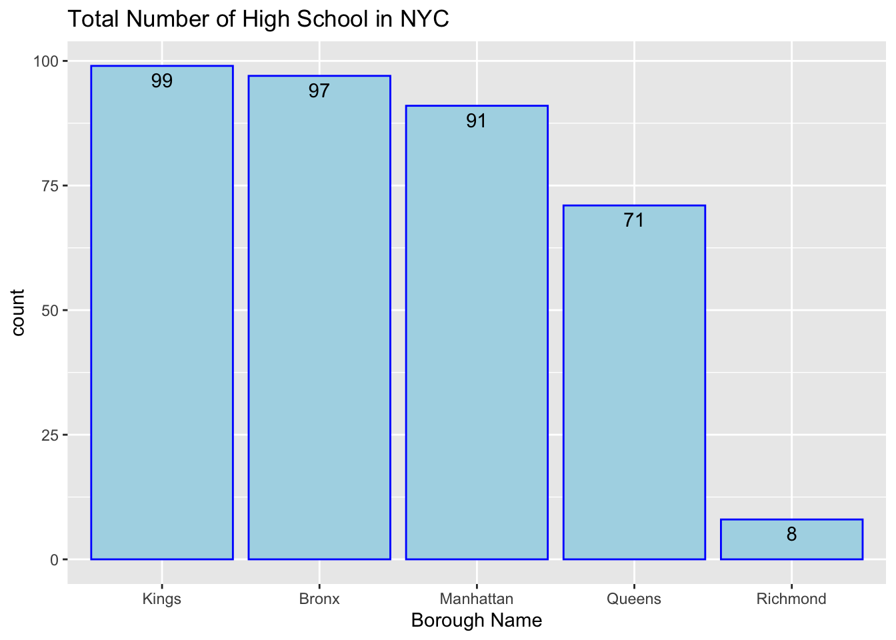
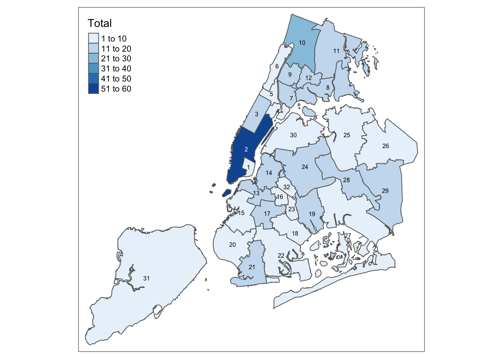

Chapter 5 Results
5.1 Allocation of Educational Resources in NYC
First, we will analyze the allocation of educational resources of high schools in NYC. There are several detailed questions we will focus: Which borough are most high schools located in? Based on the area of each county, is the school density the same? Is there difference of the average area a school need to cover? Is every school district having the same number of high schools?

We thought that New York high schools might be largely concentrated in Manhattan, just like universities. But the truth is different. In this dataset, there are 487 high schools, and from the bar chart above, we could find that the kings County has the most high schools, followed by the Bronx County, the Manhattan County and the Queens County. The Richmond County has the least high schools and there is a huge gap between the number of high schools in the Queens County and the Richmond County.
In the graph above, we aim to Know the average area the a school in different districts need to cover, calculating by the ratio of area of district and total number of schools in that district. We found that a school in the Richmond County need to cover the largest area and there is a huge gap between the Richmond County and any other county. The Queens County, the Kings County, the Bronx County and Manhattan are followed.
Based on the two bar charts above, we could find that a school in the Richmond County need to cover since the number of schools in the Richmond County is such fewer than other county. The Manhattan County does not has the most high schools, but a school in the Manhattan County need to cover the least area since the number of high schools is more than some other counties.
5.2 Education Quality Distribution in NYC
Secondly, we combine school data with ranking data and aim to find the answer on the following questions: What is the distribution of varying ranking of High School in NYC? Are them distributed fairly?

From the map above, we could find that District 2, belongs to the Manhattan County, has the most high schools,which is over 50. Then, District 10, belongs to the Bronx County, has the second most high schools, between 20 and 30. Other Districts have less than 20 high schools and each District has at least one high school.
Based on the mosaic plot above, we compare the rank level of high schools in different Counties. K represents for the Kings County, M represents for the Manhattan County, Q represents for the Queens County, R represents for the Richmond County and X represents for the Bronx County. Each color represent the increase number between two different level of ranks.
We could find that for all counties except the Richmond County, high schools over top 100 take the largest share, while school rank between 50 and 100 is the largest share in the Richmond County. For the Kings County, the Queens county and the Bronx County, rank of school between 50 and 100 is the second largest share. For the Manhattan County, the increase number of high school under rank 100 seems uniformly distributed.
Maps above show the distribution of high school in varying ranks. For top 10 high schools, 5 of them located in District 2, other 5 high school located in District 3, 10, 13, 14 and 28. For top 30 high schools, District 2 contains the most high schools, followed by District 3. Others located in districts belong to each County except the Richmond County. For top 50 high schools, over 10 of them located in District 2, and the Richmond County still does not contain a high school. For top 100 high schools, over 15 of them located in District 2, followed by District 28 belongs to the Queens County. District 8, 15, 16, 18, 19, 23, 29 do not have top 100 high schools.
Maps above show the percentage of high school in varying ranks. We could find that District 2 always contains the highest percentage of the high-quality high schools, but this advantage becomes less obvious as the number of schools increases.
5.3 The Impact of Varying-ranking High School Education Quality
In the previous two sections, it is easy to see that the quality of education varies from different boroughs and school districts. Then we want to figure out how much of a gap there is between students at different levels of education. Will it really affect future study of students? Avoiding replacement, “Top 10” level includes schools with Ranking 1 to 10, “Top 50” level shows the increasing school from “Top 10” and includes schools with Ranking 11 to 50, and the same with “Top 100” and “Over 100”.
The SAT is a standardized test widely used for college admissions in the United States.And SAT score consists of two components: 1) Math and 2) Evidence-based Reading and Writing (ERW). Each component is scored from 200 to 800 points. A higher SAT score means a better chance of getting into a top-ranked college. So SAT scores are an important part of a high school’s education.
For sat math scores, from the boxplot above, we can see that there really is a big gap between the different ranked schools. The higher the ranked schools, the better math scores students can get. Top10 high schools have a mode math score of over 700, but the over100 high schools have a mode score of only 425. And top50 students have a wide range of scores, with the lowest score being 475 and the highest score being 725. From the ridgeline, we could find that the higher the ranking level, the more volatile the distribution of grades. It suggests that the higher the ranking level, the larger educational quality gap between schools.
The distribution of writing scores is essentially the same as for math score. While we knew that performance would vary from one ranked school to another, we didn’t know that there would be such a significant difference. The top 25% of students at over100 schools can only reach the bottom 25% of the top50.
5.4 Impact of Covid on attendance
Once we had an understanding of the geographic distribution of high schools, the rankings, we wanted to find out if Covid had an impact on high schools. We will analyze the change in high school attendance in 2020 and then compare the number of Covid infections to draw conclusions.
The red line represents the total number of enrolled, green represents the number of participants, and blue represents the number of absentees. From the above time series, we can see that there is a clear abnormal change from June to September. According to the School Year Calendar of nyc department of education, we know that there are some vacation dates for school, 2/21-2/25 is Midwinter Recess, school closed, 6/ 27-9/1 is summer break and 11/25 is Thanksgiving break. It is normal to see a sharp increase in absence during these holiday days. However, from February to April, we can still see fluctuations in the number of absences, so we will focus on the analysis of attendance from February to April later
The y-axis represents the number of covid cases confirmed per day, CASE_COUNT represents the number of cases confirmed in New York City as a whole, and the other colors represent the number of cases in each borough. The time series chart above shows that March and April are the months when the number of Covid daily infections is increasing rapidly, which corresponds exactly to the situation when the high school attendance rate starts to change in March and April
The attendance rate calculation also validates our previous time series plot. We calculated the average attendance of each school in 2020 and wanted to see how many schools had lower attendance rate. The dot plot allows us to clearly see that most schools have attendance rates above 0.7, so we will then focus the analysis on schools with attendance rates less than 0.7.
The total number of schools with an average attendance rate of less than 0.7 in 2020 is 45, and when we divide these schools by region, we find that Kings has more schools with low attendance rates, while Richmond has only one, which may be related to the geographic distribution of high schools we analyzed earlier, with more high schools in Kings but fewer in Richmond. However, there is one school in Manhattan with a surprisingly low attendance rate of 0.4.